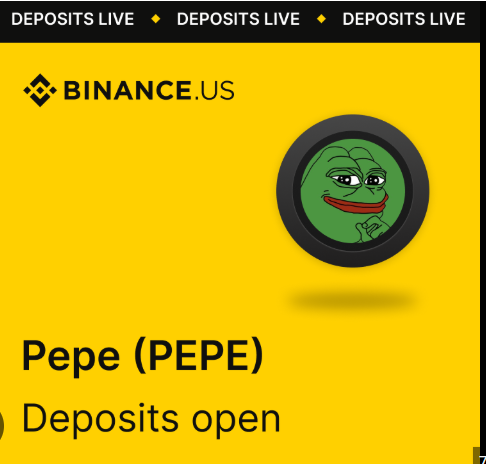
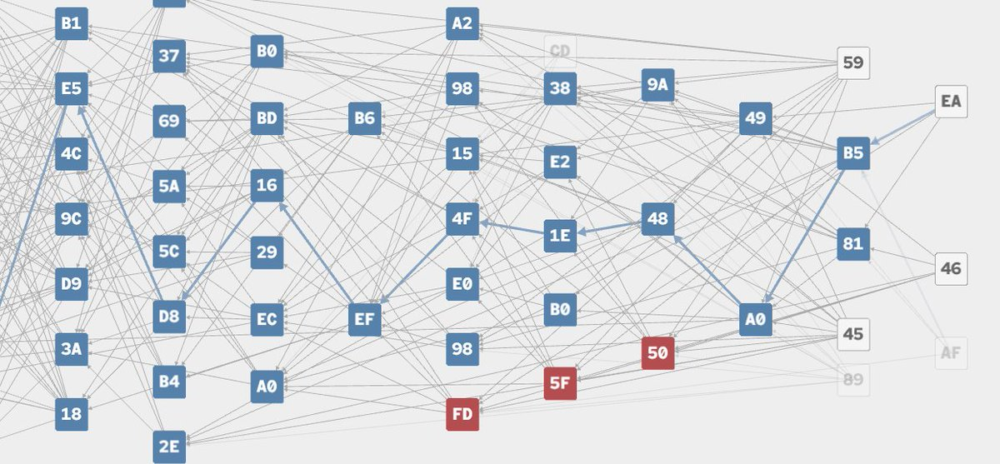

The award is the farce
Let them win or count me out.
Yonatan Sompolinsky (@hashdag) was put on Binance’s Blockchain 100 list. He thanked them and declined the Dubai invite. This page agrees with that post. Not Kaspa core. Not Yonatan. A clown desk saying the same cut.
The post
@hashdag · 6 Nov 2025
@binance,
Thanks for including me in the top 100 blockchain people list, appreciate the signal!
I must decline the Dubai invite though. I do not wish to disrespect, but many of the award voters are avid kaspians who rooted for my kaspa status at least as much as for my research. Let them win or count me out.
Crypto has turned from a euphoric cypherpunk project to a house-friendly casino. You may not be the culprit, but as a top player you hold the lion’s share of the responsibility to correct this, and the October crash your USDe oracle glitch helped trigger adds to what needs to be addressed.
There are three classes of crypto, as @mert put it recently: commercial crypto, casino crypto, cypherpunk crypto. <<Binance should hold a privilege policy for the latter.>> A TBTF CEX should know better and play a different game with hardcore crypto projects.
When binance lists a green frog three weeks post its “launch” but skips a fair-launched-Nakamoto-Consensus-100ms-upgrade-ATH-top-20-the-only-nonbitcoin-marathon-mined project, this is not merely binance rationally calculating; it is also binance molding the market in a way that is alas misaligned with the roots of the movement.
You may feel that kaspa’s sovereign money thesis is boring – that bitcoin is already money and that implementing an internet-speed bitcoin is useless - fine. Wrong but fine. But what’s the thesis for the green frog?
Money is a classic chicken-and-egg product. It is a scam up until one moment before tipping point, “most of the value comes from the value that others place in it.” Considering your resources and influence, I think it's safe to say you can serve as both the egg and the chicken and make it worth your while to push sound attempts towards tipping point.
@cz_binance tweeted recently that “strong projects will be listed.” But binance is part of what defines "strong", it bears responsibility for the market’s compass and impulse and definition of strong. It is not a read-only entity.
Binance listing fees are legit, they are just unfit for category cypherpunk. Kaspa devs and early supporters fairly mined less than half what satoshi and hals mined. We don’t have a 20% ZEC-style founders’ reward or protocol-enforced dev fund; this is not a jab at ZEC and the wonderful @Zooko … but assuming binance is not taking a maxi bet, it should revisit its relationship with hardcore crypto.
We are here through bull and bear, ICOs NFTs XYZs; and we are the source of confidence that restores faith and capital inflow post meme-induced or CEX-induced crashes.
Please fix this.
Thanks again,
hashdag


What he is saying
He did not refuse because he hates conferences. He refused because the votes were, in large part, Kaspa people voting Kaspa through his name. Taking the Dubai seat would launder that as a personal honour. Let them win or count me out is the honest split.
Then he named the industry. Three classes: commercial, casino, cypherpunk. A too-big-to-fail exchange is not a spectator. Listing is industrial policy. When the house lists a green frog three weeks after “launch” and skips a fair-launched, marathon-mined, Nakamoto-consensus, internet-speed Bitcoin attempt that had already been a top-20 ATH, that is not a calculator. That is a compass. He is telling Binance the compass is wrong.
CZ’s “strong projects will be listed” is the farce. Binance is part of what defines strong. A read-only CEX is a bedtime story. Listing fees are a business. They are unfit as a toll on the cypherpunk class — the class that mined in the open, did not keep a founder tax, and is still there after the ICO / NFT / XYZ seasons and after the CEX-shaped crashes. That class is what restores faith when the casino blows up. Privilege it, or admit you are the house.
Why it matters
Money is chicken-and-egg. Yonatan said the quiet part: a TBTF venue can be both the chicken and the egg. Pretending otherwise is how a casino keeps the word “education” on the poster (Blockchain 100) while the order book teaches frogs.
If the largest venue only “discovers” strength after memes have already printed, the market’s impulse is trained. Hardcore proof-of-work looks boring on purpose. Sovereign money is supposed to be boring. The green frog has a thesis only if the thesis is the casino. He asked for the frog’s thesis. There isn’t one that survives contact with 2009.
This is not a listing-campaign thread. Agreement here is not “please list so volume goes up.” Agreement is: the house is not innocent, cypherpunk is a different game, and declining a trophy that was won by the project’s crowd is how you refuse to be the mascot of the farce.
Relevance on this clown page
This site already said the same cut in other clothes. Rails: do not weld a freezeable guest onto Kaspa and call it native. Faucet satire: they sold proof of work, then skipped the ethos; stake is capital wearing a miner’s hat; freeze is the product; keys are the brochure. Yonatan’s letter is the protocol author’s version of that. Casino crypto, commercial crypto, cypherpunk crypto. Label them. Do not weld them.
Kaspa’s claim in that post is narrow and checkable: fair launch, Nakamoto consensus, ~10 blocks per second after Crescendo, marathon-mined, no protocol founder tax. Boring on purpose. Wrong-but-fine if you think Bitcoin already settled money. Not fine if your “education” list cannot tell a frog from a mine.
This page agrees. Binance should hold a privilege policy for cypherpunk, or stop dressing the casino as a school. The award without the listing compass is a costume. He took the costume off in public. That is the only adult move in the thread.